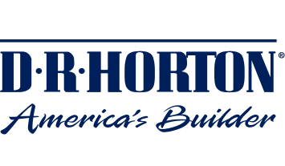

Ranglister Byggeri & materialer D.R. Horton

D.R. Horton
53
15070100
Et blik på de samme fund, ikke en ny score. Sådan virker det
En god forretning med et reelt spørgsmålstegn: prisen, en revne eller begge dele.
Største fradrag
- Margin−6
- Efterspørgsel og renter−5
- Vækstens kvalitet−4
Styrker
- Balance+1
Sådan er scoren bygget op
Fra 100 til 53, trin for trin: point trækkes fra for forretningen, prisen og revnerne, lægges til for dokumenterede styrker, og så følger tre datajusteringer.
Start
Score
Hold musen over et trin eller vælg det for at se, hvad der drev det. Trin med fund åbner dem nedenfor.
Nøgletal
Pr. 6 nov. 2026. Analytikernes kursmål er ofte optimistiske; læs opsiden som et fingerpeg, ikke en prognose.
- Pris
- 152.28 USD
- Analytikernes mediankursmål
- 148.50 USD
- Opside til median
- −2.5%
- Analytikere
- 21
- Kursmålsinterval
- 114.00 – 186.00 USD
- 52-ugers ændring
- +5%
- P/E (historisk)
- 15.1
- Forward P/E
- 17.2
- PEG
- 2.21
Fund
Hvert fradrag og hvert plus med sin kilde. Åbn et trin for at læse dem.
Forretning
Bliver virksomheden stærkere, ikke bare større? · 4 fund−15 af −30
- −6MarginBruttomargin på boligsalg 20,7 % i Q3 og 21,3 % TTM mod 30,1 % i FY22; driftsmargin 12,0 % mod 23,0 %. Ledelsen venter, at salgsincitamenterne forbliver høje i Q4.
- −2ROICROIC 10,4 % mod WACC 9,9 %; afkastet var 28,8 % i FY22 og 18,1 % i FY24 og er nu tæt på kapitalomkostningen.
- −4Vækstens kvalitetOmsætningsguidance for FY26 skåret fra 33,5–34,5 til 32,5–33,0 mia. USD (ca. -4 %), gennemsnitlig salgspris -2 % til 362.000 USD, og EPS ventes 10,42 mod 16,51 i FY22.
- −3KapitalallokeringTilbagekøb 2,97 mia. + udbytte 0,51 mia. USD TTM mod FCF 3,20 mia. (FY25: 4,8 mia. mod 3,3 mia.); nettogælden er steget fra 1,5 til 5,1 mia. siden FY24, så tilbagekøbet er delvist lånefinansieret i en nedgang.
Pris
Dagens multipler målt mod selskabets egen historik og konkurrenterne. · 2 fund−5 af −35
- −4Multipler mod egen historikForward P/E 12,9 er i toppen af egen historik (4,5–14,2 i FY21–FY25), fordi indtjeningen er faldende; P/B 1,64 ligger midt i intervallet 1,2–2,4.
- −1PeersForward P/E 12,9 og EV/EBITDA 10,7 mod PulteGroups 11,0 og 8,1 ved samme P/B (1,63); Lennar handler til P/B 0,86.
Revner
Cash flow, kunder, gæld, insidere, guidance og det, der ligger bag hovedtallene. · 3 fund−10 af −35
- −5Efterspørgsel og renterOrdreindgangen var flad (23.084 boliger) og annulleringsraten steg til 20 % fra 17 %; konkurrenten Lennar meldte i september om et forværret marked, ordrer -9 % og bruttomargin 15,8 %, med stigende boligrenter.
- −4Lager af usolgte boligerBoliglageret er steget til 38.000 fra 29.600 i september 2025; 23.300 er usolgte, heraf 7.600 færdigbyggede – risiko for flere rabatter eller nedskrivninger.
- −1UdlejningssegmentetUdlejningsomsætningen faldt 30 % og resultatet før skat 43 % i Q3 (margin 11,6 %); salget af udlejningsprojekter til investorer er svagt.
Plus
Kun dokumenterede styrker. · 1 fund+1 af +15
- +1BalanceGæld/total kapital 23 %, likviditet 6,1 mia. USD og nettogæld/EBITDA 1,2 – robust for en boligbygger trods stigningen.
Forbehold
Det, scoren ikke fanger, eller hvor dataene er svage.
Regnskabsår til 30. september; Q4 FY2026 er IKKE aflagt endnu (29. okt. 2026), så tallene går til 30. jun. 2026. Cyklisk boligbygger: P/E er lavt i toppen og højt i bunden, så P/B er medtaget i T2. Gælden omfatter Forestar og finansieringsforretningen. Incitamentsniveauet (rabatter, rentenedkøb) er ikke kvantificeret i regnskabet. Told på byggematerialer og arbejdskraft (immigration) er ikke undersøgt. Insiderhandel er ikke undersøgt. 13F-køb giver ingen point.
Også i Byggeri & materialer
De højeste scorer i samme branche.